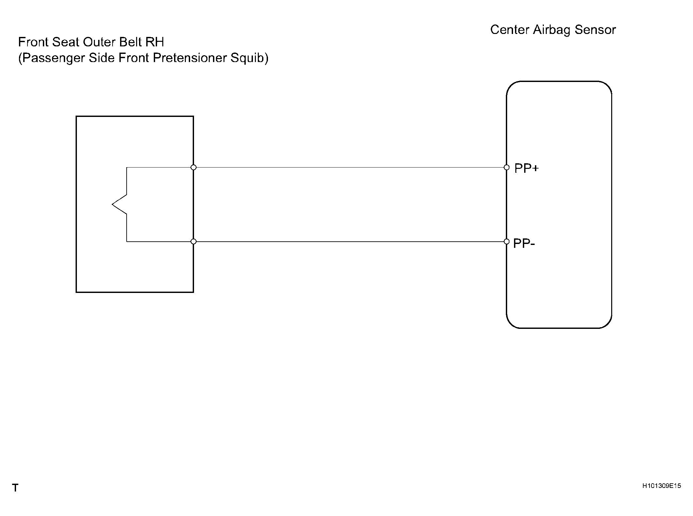

DTC B1905/74 Short in Front Passenger Side Front Pretensioner Squib Circuit; DTC B1906/74 Open in Front Passenger Side Front Pretensioner Squib Circuit; DTC B1907/74 Short to GND in Front Passenger Side Front Pretensioner Squib Circuit; DTC B1908/74 Short to B+ in Front Passenger Side Front Pretensioner Squib Circuit: Wiring Diagram

Courtesy of © TOYOTA, LICENSE AGREEMENT TMS1002